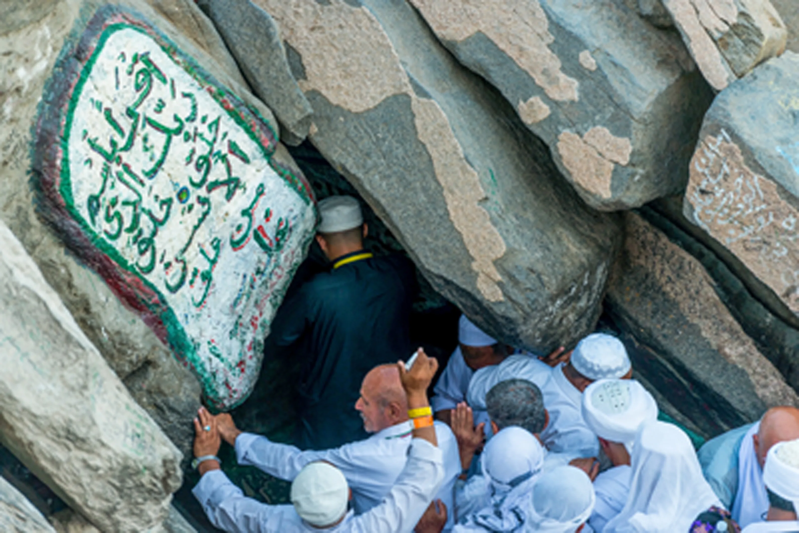
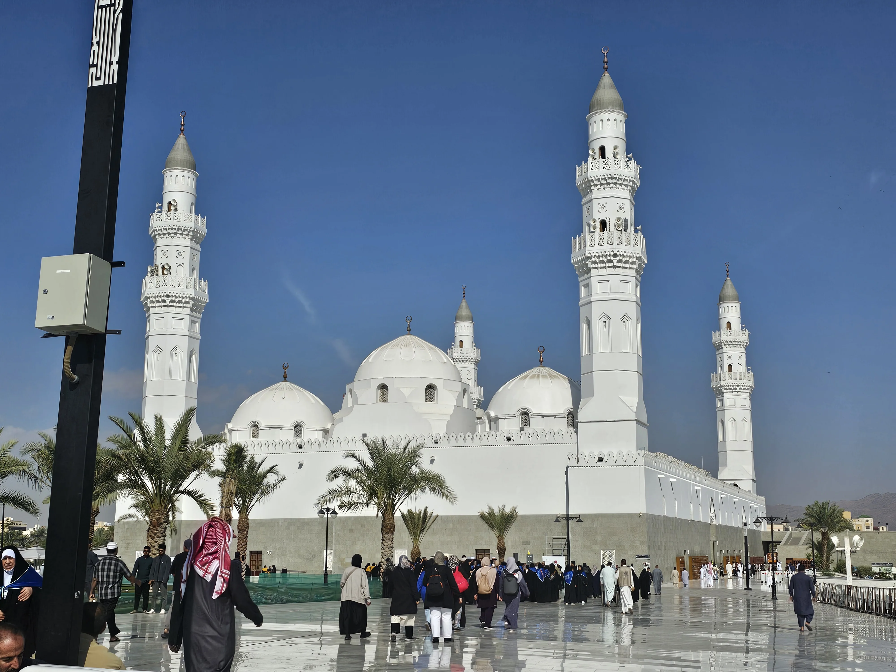
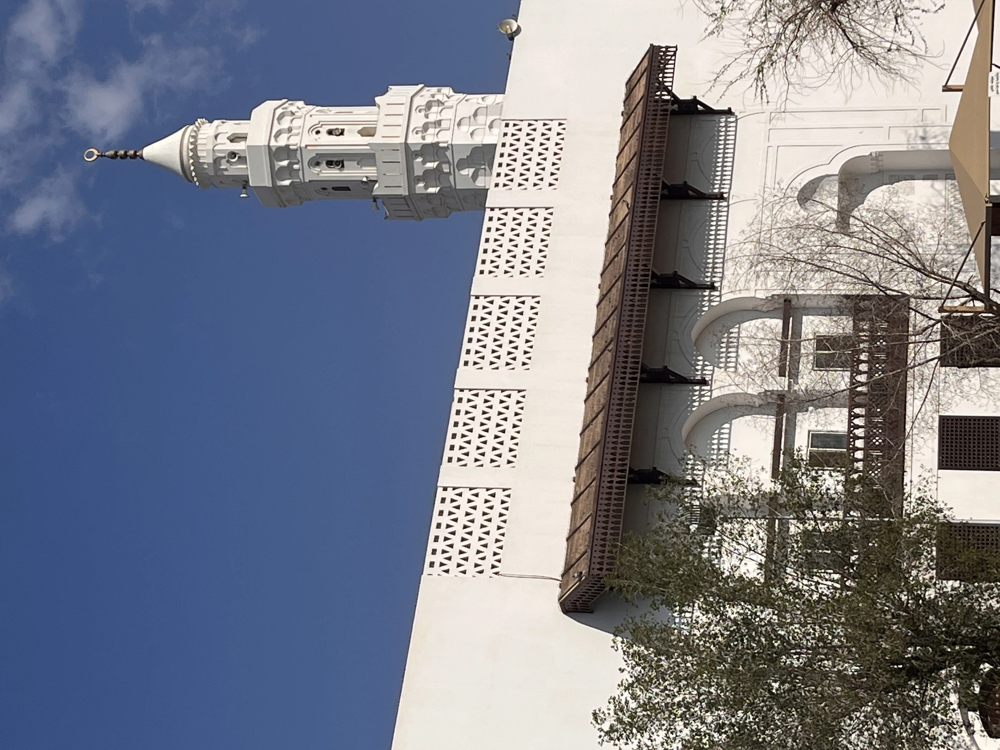

Accueil › Blog › De la grotte de Hira à la mosquée de Quba : les lieux fondateurs de l'islam
Histoire · 7 min de lecture · 2026-03-30
De la grotte de Hira à la mosquée de Quba : les lieux fondateurs de l'islam
Selon la tradition musulmane, l'histoire de l'islam commence dans une grotte de montagne, avant de se prolonger jusqu'à la fondation de sa toute première mosquée. De la grotte de Hira à la mosquée de Quba, en passant par Masjid al-Qiblatayn, quatre lieux racontent la naissance progressive d'une nouvelle religion et de son architecture.



La grotte de Hira, un lieu de retraite avant la révélation
Sur le mont Jabal al-Nour, aux abords de La Mecque, une petite grotte accueillait, selon la tradition, les retraites spirituelles annuelles de Muhammad avant même qu'il ne devienne prophète : il avait pour habitude de s'y isoler en méditation (tahannuth) pendant un mois. C'est dans cette grotte que la tradition situe la toute première révélation, vers l'an 610, datée de la Nuit du Destin (Laylat al-Qadr). Les premiers versets révélés y sont ceux de la sourate Al-Alaq, dont le mot d'ouverture, « Iqra » (« Lis » ou « Récite »), marque traditionnellement le point de départ de l'islam.
De la révélation à l'Hégire
Après cette première révélation, la prédication de Muhammad à La Mecque se heurte à l'hostilité d'une partie de sa tribu, les Quraych. En 622, il quitte la ville avec ses compagnons pour rejoindre Médine : cette migration, l'Hégire (Hijra), marque le point de départ du calendrier musulman. C'est en chemin, lors d'une étape au village de Quba, aux portes de Médine, que se joue un épisode fondateur pour l'architecture religieuse de l'islam.
Quba, la première mosquée de l'islam
La mosquée de Quba est traditionnellement présentée comme la toute première mosquée construite dans l'histoire de l'islam. Les récits varient sur les détails de sa fondation : certains rapportent que le Prophète lui-même en aurait posé la première pierre à son arrivée à Quba, d'autres qu'elle aurait déjà été édifiée par les premiers émigrants avant son arrivée. Le séjour de Muhammad à Quba, avant son entrée officielle à Médine, aurait duré de trois à une vingtaine de jours selon les sources. L'édifice a été reconstruit et agrandi à de nombreuses reprises au fil des siècles, jusqu'à une reconstruction complète dans les années 1980 qui lui donne son visage actuel, aux dômes blancs caractéristiques.
Masjid al-Qiblatayn, la mosquée des deux qiblas
À Médine se trouve un second lieu fondateur, distinct de Quba : Masjid al-Qiblatayn, « la mosquée aux deux qiblas ». La tradition rapporte qu'en plein milieu d'une prière, le 15 Sha'ban de l'an 2 de l'Hégire (623), Muhammad y aurait reçu l'ordre de changer la direction de la prière : jusque-là tournée vers Jérusalem et la mosquée Al-Aqsa, elle se tourne désormais, et pour toujours, vers La Mecque et la Kaaba. C'est le seul lieu où le Prophète aurait prié vers deux qiblas différentes au cours d'une même prière, ce qui vaut son nom à la mosquée. L'édifice comportait à l'origine deux mihrabs orientés dans des directions différentes ; lors d'une reconstruction plus récente, le mihrab tourné vers Jérusalem a été retiré et remplacé par un simple repère commémoratif, sous un dôme secondaire.
Quatre lieux, une même trajectoire
De la grotte de Hira à Masjid al-Qiblatayn, ces lieux dessinent la trajectoire fondatrice de l'islam naissant : un lieu de retraite et de révélation, une migration fondatrice, une première mosquée, et le geste architectural et spirituel qui fixe définitivement l'orientation de la prière vers La Mecque, celle-là même qui donne son nom au projet Qibla.
À découvrir
Mosquées citées dans cet article
À propos du contenu de cette page : ce site propose un contenu éditorial et culturel rédigé avec soin et le souci du respect des traditions religieuses concernées ; il ne constitue pas un avis théologique ou une source d'autorité religieuse. Malgré nos vérifications, des erreurs, imprécisions ou approximations peuvent subsister. Si vous en repérez une, merci de nous la signaler via la page Contact ou par e-mail à qibla.mosk@gmail.com, nous la corrigerons avec gratitude.